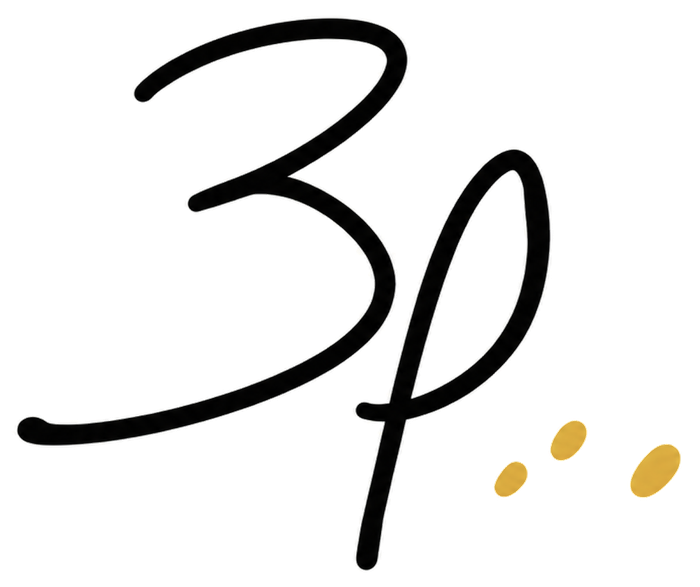

Servicios especializados para la industria petrolera
Well testing, bombeo, mantenimiento y servicios de apoyo para operaciones de producción e intervención.


Tres PuntosTres Puntos desarrolla y ejecuta soluciones para operaciones y proyectos de energía, industria e infraestructura en Venezuela, combinando experiencia de campo, capacidad de respuesta y control apoyado en tecnología.
Experiencia local. Ejecución con criterio.
Well testing, bombeo, mantenimiento y servicios de apoyo para operaciones de producción e intervención.
Construcción, rehabilitación, adecuación y montaje de infraestructura e instalaciones industriales.
Procura, transporte, movilización y suministro de equipos y materiales para responder a las necesidades de cada proyecto.
En Tres Puntos combinamos experiencia de campo con herramientas de seguimiento que permiten mantener información actualizada sobre avance, recursos, hitos y decisiones críticas. Esto nos permite anticipar desviaciones, responder más rápido y mantener cada proyecto bajo control.
Entendemos el contexto operativo y convertimos cada necesidad en una solución ejecutable.
Tomamos decisiones cerca de la operación y actuamos con rapidez cuando las condiciones cambian.
Usamos herramientas digitales para dar seguimiento al avance, concentrar información y mejorar la visibilidad del proyecto.
Seguimos hitos, recursos, costos y variables críticas para mantener el proyecto alineado con sus objetivos.
Cuéntanos qué necesitas resolver. Podemos estructurar una solución técnica y operativa para llevarla a ejecución.
Conversar con Tres Puntos →